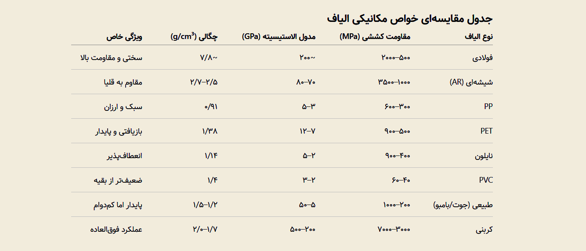

بتن الیافی: انواع الیاف و نقش آنها در بهبود خواص مکانیکی
مقدمه
بتن الیافی (Fiber-Reinforced Concrete, FRC) یک کامپوزیت ساختمانی است که در آن الیاف کوتاه و پراکنده به مخلوط بتن افزوده میشوند تا خواص مکانیکی و دوام آن بهبود یابد. بتن معمولی مقاومت فشاری بالایی دارد، اما در کشش ضعیف و شکننده است و بهسرعت دچار ترک میشود. افزودن الیاف، این محدودیت را برطرف کرده و باعث افزایش شکلپذیری، سختی، مقاومت به ضربه و کنترل ترک میشود.
الیاف مانند «پل» عمل کرده و تنشها را از روی ترک عبور میدهند و از گسترش آن جلوگیری میکنند. نتیجه، مادهای مقاومتر و بادوامتر است.
استفاده از الیاف طبیعی در ملات و گل به هزاران سال پیش بازمیگردد (مثلاً کاه در خشت)، اما بتن الیافی مدرن با بهکارگیری الیاف فولادی، شیشهای و پلیمری از دهه ۱۹۵۰ میلادی وارد مهندسی عمران شد. امروزه بتن الیافی در کفهای صنعتی، روسازیها، تونلها، شاتکریت و سازههای مقاوم در برابر زلزله و ضربه بهکار میرود.
انواع الیاف در بتن الیافی
الیاف بتن از نظر جنس به چند دسته اصلی تقسیم میشوند: فولادی، شیشهای، مصنوعی (پلیمری)، طبیعی و کربنی. هر دسته خواص مکانیکی و شیمیایی خاصی دارد که بر رفتار بتن اثر میگذارد.
۱. الیاف فولادی (Steel Fibers)
- ویژگیها: مقاومت کششی ۵۰۰ تا ۲۰۰۰ مگاپاسکال، مدول الاستیسیته حدود ۲۰۰ گیگاپاسکال، چگالی ۷/۸ g/cm³.
- انواع: صاف، قلابدار (Hooked-End)، موجدار، خردشده.
- مزایا: بهترین عملکرد در بهبود مقاومت خمشی و سختی.
- محدودیت: امکان خوردگی در محیطهای مهاجم.
۲. الیاف شیشهای (Glass Fibers)
- ویژگیها: مقاومت کششی ۱۰۰۰ تا ۳۵۰۰ مگاپاسکال، مدول ۷۰–۸۰ گیگاپاسکال، چگالی ۲/۵–۲/۷ g/cm³.
- انواع: الیاف شیشه مقاوم به قلیا (AR-Glass).
- مزایا: مقاومت بالا در کشش، مناسب برای نما و المانهای پیشساخته نازک.
- محدودیت: شکننده و حساس به قلیا در صورت عدم استفاده از نوع AR.
۳. الیاف مصنوعی (Synthetic Fibers)
شامل پلیمرهایی مانند پلیپروپیلن (PP)، پلیاتیلن ترفتالات (PET)، نایلون، PVC و پلیاستر.
- PP: مقاومت کششی ۳۰۰–۶۰۰ MPa، مدول ۳–۵ GPa.
- PET (بازیافتی): مقاومت ۵۰۰–۹۰۰ MPa، مدول ۷–۱۲ GPa.
- نایلون: مقاومت ۴۰۰–۹۰۰ MPa، مدول ۲–۵ GPa.
- PVC: مقاومت پایینتر (~۴۰–۶۰ MPa)، مدول ~۲–۳ GPa.
- پلیاستر: مقاومت کششی ۴۰۰–۷۰۰ MPa، مدول ۵–۷ GPa
📌 این الیاف سبک، مقاوم در برابر خوردگی و مقرونبهصرفهاند، اما مقاومتشان نسبت به فولاد کمتر است.
۴. الیاف طبیعی (Natural Fibers)
الیاف گیاهی یا معدنی مانند جوت (کنف هندی)، کنف، بامبو، سیسال، الیاف نارگیل و بازالت.
- ویژگیها: مقاومت کششی ۲۰۰–۱۰۰۰ MPa، مدول ۵–۵۰ GPa، چگالی ۱/۲–۱/۵ g/cm³.
- مزایا: پایدار و تجدیدپذیر، گزینهای سازگار با محیط زیست.
- محدودیت: جذب رطوبت، تجزیه زیستی و دوام کمتر نسبت به الیاف صنعتی.
۵. الیاف کربنی (Carbon Fibers)
- ویژگیها: مقاومت کششی ۳۰۰۰–۷۰۰۰ MPa، مدول ۲۰۰–۵۰۰ GPa، چگالی ۱/۷–۲/۰ g/cm³.
- مزایا: استحکام و سختی بسیار بالا، مقاوم در برابر مواد شیمیایی.
- محدودیت: قیمت بالا و کاربرد محدود به پروژههای خاص.

نقش الیاف در بهبود خواص مکانیکی بتن
- مقاومت فشاری: افزایش محدود (۰–۲۰%)؛ بیشترین اثر با الیاف فولادی و کربنی.
- مقاومت کششی: افزایش چشمگیر (گاهی تا ۱۵۰%)، بهویژه با فولاد و کربن.
- مقاومت خمشی: بهبود ۴۰–۲۰۰%؛ بسته به نوع و طول الیاف.
- سختی و شکلپذیری: تبدیل شکست ترد به رفتار نرم و شکلپذیر.
- دوام: کاهش ترکهای ناشی از جمعشدگی، بهبود مقاومت در برابر ضربه و خستگی.
عوامل مؤثر بر عملکرد الیاف
- مقدار مصرف: معمولاً ۰/۵ تا ۲ درصد حجمی؛ بیش از این باعث گرهخوردگی و کاهش کارایی میشود.
- طول و نسبت طول به قطر: الیاف بلندتر و با نسبت بالاتر عملکرد بهتری در پلزنی ترک دارند.
- جهتگیری: الیاف تصادفی همهجانبه عمل میکنند، اما در صورت همراستایی با ترک کارایی بالاتری دارند.
- سیستمهای هیبریدی: ترکیب الیاف ریز (PP) با الیاف درشتتر (فولاد) اثر همافزایی ایجاد میکند.
کاربردهای بتن الیافی
- روسازی و کفهای صنعتی (کنترل ترک و ضربه).
- شاتکریت در تونلسازی و معادن.
- قطعات پیشساخته مانند لوله، پانل و المانهای نما.
- تقویت لرزهای و مقاومسازی.
- استفاده از الیاف بازیافتی (مانند PET) در پروژههای پایدار.
مزایا و معایب بتن الیافی
مزایا:
- کنترل ترک و افزایش دوام.
- کاهش نیاز به میلگرد در برخی کاربردها.
- مقاومت بالا در برابر ضربه و خستگی.
- گزینههای پایدار (الیاف طبیعی و بازیافتی).
معایب:
- کاهش کارایی بتن تازه (نیاز به روانکننده).
- هزینه بالاتر برخی الیاف (مثل کربن).
- خوردگی (فولاد) یا تجزیه زیستی (الیاف طبیعی).
- مشکل توزیع یکنواخت در صورت اختلاط نامناسب.
نتیجهگیری
بتن الیافی یکی از نوآوریهای مهم در فناوری مصالح ساختمانی است که به کمک آن میتوان ضعف بتن در کشش و تردی شکست را برطرف کرد. انتخاب نوع و مقدار مناسب الیاف نقش کلیدی در کارایی دارد: فولادی برای سختی و مقاومت بالا، شیشهای و پلیمری برای کنترل ترک و صرفه اقتصادی، طبیعی برای پایداری زیستمحیطی و کربنی برای کاربردهای ویژه. با توسعه سامانههای هیبریدی و استفاده از الیاف بازیافتی، آینده بتن الیافی روشنتر و پایدارتر خواهد بود.
بهترین مطالب هر ما
ارسال میشه به صندوق پستی شما!
این بالا کلیک کن و ایمیلت رو بنویس
ثبت